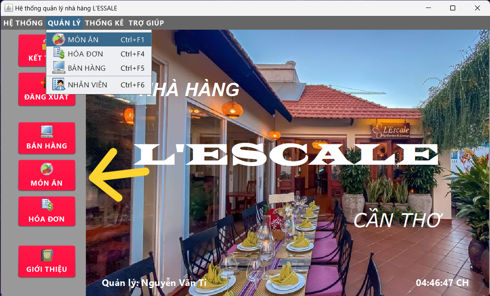
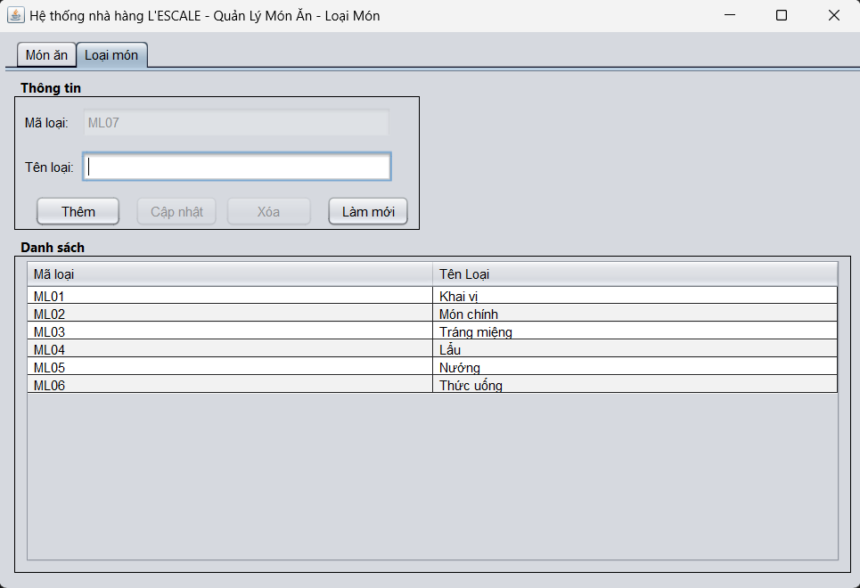

Mục đích: Hỗ trợ người dùng quản lý và thiết lập các thông tin các món ăn, loại món ăn hay phân loại món ăn theo đặc tính, quản lý món ăn theo loại món ăn.
Sau khi đăng nhập bằng tài khoản quản lý. Người dùng chọn Menu QUẢN LÝ >> MÓN ĂN hoặc chọn vào Nút MÓN ĂN trên màn hình để mở danh sách các món ăn, loại món ăn đang được quản lý trên hệ thống.
Tại đây người dùng có thể kiểm tra được các thông tin xoay quanh món ăn:
+ Danh sách món ăn.
+ Các chức năng thêm mới, cập nhật, xoá món ăn.
+ Tìm kiếm món ăn theo loại món ăn, tên món ăn và đơn giá.
Người dùng có thể click vào một bản ghi để xem thông tin của món ăn và thực hiện các chức năng.
Để quản lý và thực hiện các chức năng của form món ăn, người dùng tiến hành các thao tác:
Bước 1: Chọn loại món ăn trên comboBox có sẵn.
Bước 2: Nhập đầy đủ thông tin: tên món ăn và đơn giá theo qui định.
Bước 3: Chọn hình ảnh cho món ăn (có thể bỏ qua).
Bước 4: Chọn nút Thêm để hoàn thành thao tác thêm mới món ăn.
Bước 1: Click vào một bản ghi, thông tin về món ăn sẽ hiện lên bảng thông tin.
Bước 2: Cập nhật đầy đủ thông tin: tên món ăn và đơn giá theo qui định.
Bước 3: Cập nhật hình ảnh cho món ăn (có thể bỏ qua).
Bước 4: Chọn nút Cập nhật để hoàn thành thao tác cập nhật món ăn.
Bước 1: Click vào một bản ghi, thông tin về món ăn sẽ hiện lên bảng thông tin.
Bước 2: Chọn nút Xoá để tiến hành tao tác.
Bước 3: Chọn nút Yes nếu bạn chắc chắn muốn xoá món ăn.
Bước 1: Click vào comboBox Loại món ăn ở mục Tìm kiếm.
Bước 2: Chọn loại món ăn muốn tìm.
Món ăn theo loại món đã được chọn sẽ hiện lên bảng.
Bước 1: Nhập tên món ăn muốn tìm vào ô Tên món ăn ở mục Tìm kiếm.
Bước 2: Nhấn Enter để hoàn thành tìm kiếm.
Món ăn theo tên món đã được nhập sẽ hiện lên bảng.
Bước 1: Click vào comboBox Đơn giá ở mục Tìm kiếm.
Bước 2: Chọn đơn giá muốn tìm.
Món ăn theo đơn giá đã được chọn sẽ hiện lên bảng.
Nhấn vào tab chuyển trang sang Loại món.
Tại đây người dùng có thể kiểm tra được các thông tin xoay quanh loại món ăn:
+ Danh sách loại món ăn.
+ Các chức năng thêm mới, cập nhật, xoá loại món ăn.
Người dùng có thể click vào một bản ghi để xem thông tin của loại món ăn và thực hiện các chức năng.
Để quản lý và thực hiện các chức năng của form loại món ăn, người dùng tiến hành các thao tác:
Bước 1: Nhập thông tin: tên loại món ăn theo qui định.
Bước 2: Chọn nút Thêm để hoàn thành thao tác thêm mới loại món ăn.
Bước 1: Click vào một bản ghi, thông tin về loại món ăn sẽ hiện lên bảng thông tin.
Bước 2: Cập nhật thông tin: tên loại món ăn theo qui định.
Bước 3: Chọn nút Cập nhật để hoàn thành thao tác cập nhật loại món ăn.
Bước 1: Click vào một bản ghi, thông tin về loại món ăn sẽ hiện lên bảng thông tin.
Bước 2: Chọn nút Xoá để tiến hành tao tác.
Bước 3: Chọn nút Yes nếu bạn chắc chắn muốn xoá loại món ăn.